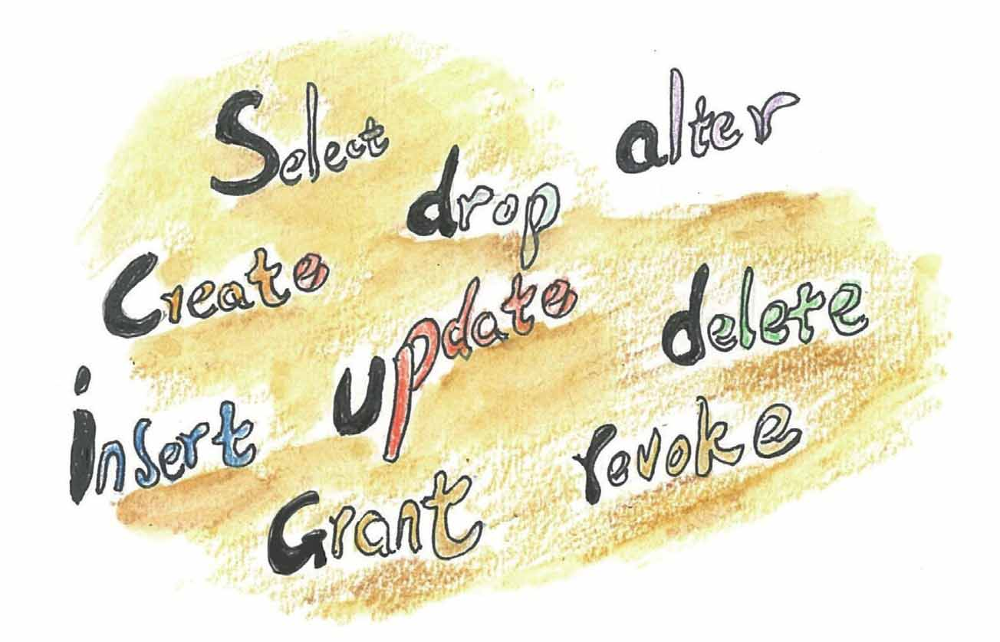

你想学计算机数据库语言吗？它的名字叫“SQL”
在科德提出关系数据库的概念之初，不少人或者以怪异的思想视之，或者对它半信半疑（唉，人们对新思想总是这样）。
在IBM工作的唐纳德·钱柏林（Donald D.Chamberlin）认为，科德提出的关系代数和关系演算过于数学化，很难成为广大程序员和使用者的编程工具，如果这个问题不解决，关系数据库就无法普及。
因此钱柏林和同事雷蒙德·博伊斯（Raymond F.Boyce）设计出了一种用于操作数据库的简化语言，这是一种关系表达式语言，后来被命名为SQL语言，它的全称是结构化查询语言（Structured Query Language，SQL）。SQL语言简单易学，功能丰富，它的出现使得数据库系统的操作变得容易，也就是说用户只需要提出“做什么”，而无须指示“怎么做”，这样，即使对数据库内在结构不熟悉的用户也可以很快地掌握。
SQL功能极强，语言十分简洁，经过巧妙的设计，完成核心功能只需要9个动词，更主要的是它接近英语口语，容易学习，容易使用。

SQL使用的9个核心动词
20世纪80年代后期，SQL语言逐渐成为关系数据库管理系统的标准语言，并且从那以后SQL成为应用最广的数据库专用语言。
科德是开创者，钱柏林是紧跟的推动者。
1988年，由于“革命性地改变了数据库系统行业的面貌”，钱柏林获得了美国计算机协会颁发的“软件系统奖”。2009年，也因为他在SQL语言上的贡献，波士顿计算机历史博物馆为他设立了一个蜡像，他也是当今可扩展标记语言（XML）的数据查询语言XQuery的创造者之一。同时，钱柏林也是一个富有生活情趣的人，工作之外他喜欢的运动有帆板、皮划艇、摩托车。
晚上，母女俩在饭桌边上继续讨论。
妈妈：基本的SQL命令只需很少的时间就能学会，有的命令几天之内就可以掌握。
小文：真的吗？
妈妈：“让不懂计算机的外行也能掌握SQL”——这是钱柏林他们最初的愿望。据说当年SQL语言开发项目组的人野心很大，想借此实现普通大众也能广泛应用计算机的梦想。项目组找来了一位语言学家，这位语言学家跑到圣荷塞州立大学，找了许多不懂计算机的大学生，教授他们SQL语言，就像白居易当年对老妪吟诗那样，寻找改进的方案。
小文：可以举个例子吗？我是说SQL语言。
妈妈：当然可以，比如数据库中有一张名为book_information的表存放着一些图书的信息，你想找村上春树的书，对应的SQL命令可以是这样：
SELECT book_name FROM book_information WHERE writer_name=“村上春树”
这条SQL命令的含义是这样：在“book_information”的表中查找作者名为“村上春树”的书名。“SELECT”用于数据查询，是SQL语言9个核心动词中使用最多的一个。
小文：看起来跟英语差别不是很大呢，不过真要是让奶奶来记恐怕她还是记不住！
妈妈：对于普通用户来说要记这样的东西他是会嫌麻烦的。实际上你只管在系统提供的图形界面上输入“村上春树”四个字就可以了，就像这样。
妈妈在电脑上打开学校图书馆主页，敲了几下键盘。
小文：嗯，是的，类似这样的页面是用得很多，但这跟SQL语言有什么关系吗？
妈妈：是这样的，也就是当你输入“村上春树”，鼠标点“检索”之后，这套图书管理系统的“后台”执行的可以是这条SQL命令：
SELECT*FROM book_information WHERE writer_name=“村上春树”
这条命令的含义是从book_information这张表中去找到满足作者名是村上春树的“行”，并列出所在行的全部信息，“*”的含义是显示符合条件的“行”的所有“列”的信息。这条指令引发的实质上是对数据库中那张“二维表”的一个“选择”运算。
小文：哦，是不是这样，也就是说我在电脑上的一个查询，系统是通过SQL命令和关系的运算去完成的。
妈妈：正确，尽管普通的用户感觉不到。
小文：这样说来，我们高考分数的查询，电脑也是这样执行的？
妈妈：不仅仅是你的高考分数，还有我的电子违章、我们银行卡的余额，计算机实际上都可以通过SQL语句去数据库中查询得到。
小文：好吧，有机会我也来试试SQL语句。
妈妈：上大学后将会用到的，现在，你有没有体会到“关系”与“关系数据库”之间的关系了啊？
小文：有一点了。
妈妈：妈妈生下一个孩子，这个世界就增加了一个母子关系；当你到图书馆去借了一本《平凡的世界》，你和那本书就建立了一个借书关系；你到超市去买了块口香糖，你参加了一次考试，看了场电影，无一不是关系的体现呢！
所以说，当你用离散的眼光去看这个世界的时候，你应该注意到离散的个体之间其实存在千丝万缕的联系，而数据库就是存储和管理这些五花八门联系的数据仓库。
不过，小文，你要知道，计算机是一个不断推陈出新的领域，在这个领域，一种技术如果使用了上十年，往往就意味着高龄。
数据库技术也是如此，关系数据库从异军突起到铺天盖地地应用，经历已近四十年。逐渐地，人们发现传统的关系数据库并不是没有缺点，它在应付一些超大规模和高并发类型的网络构架上有些力不从心。
这时，有人又提出了对关系数据库持否定意见的“No SQL”思想。
No SQL的含义是“Not only SQL”，即“不仅仅是SQL”或者“仅仅用SQL是不够的”。No SQL的拥护者也及时推出了一些No SQL类型数据库。
让我们拭目以待，看看No SQL这个数据库新宠被下一个数据库新宠取代需要多久吧。
当妈妈生下一个孩子，这个世界就增加了一个母子关系，对于妈妈和这个孩子来说，这个关系是不变的，但对于数据库专家们来说，描述这种关系的方式却是在不断变化着……
妈妈生下一个孩子，这个世界就增加了一个母子关系，
对于数据库专家们来说，描述这种关系的方式在不断变化……